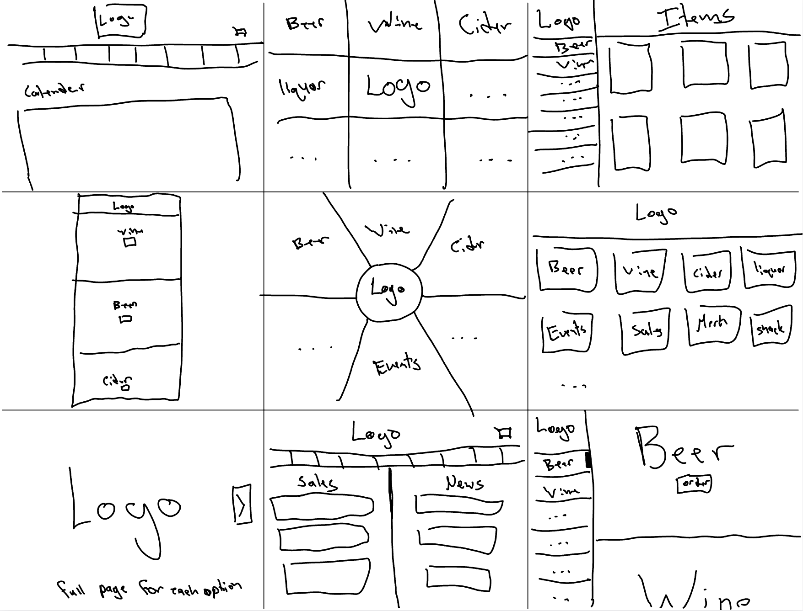
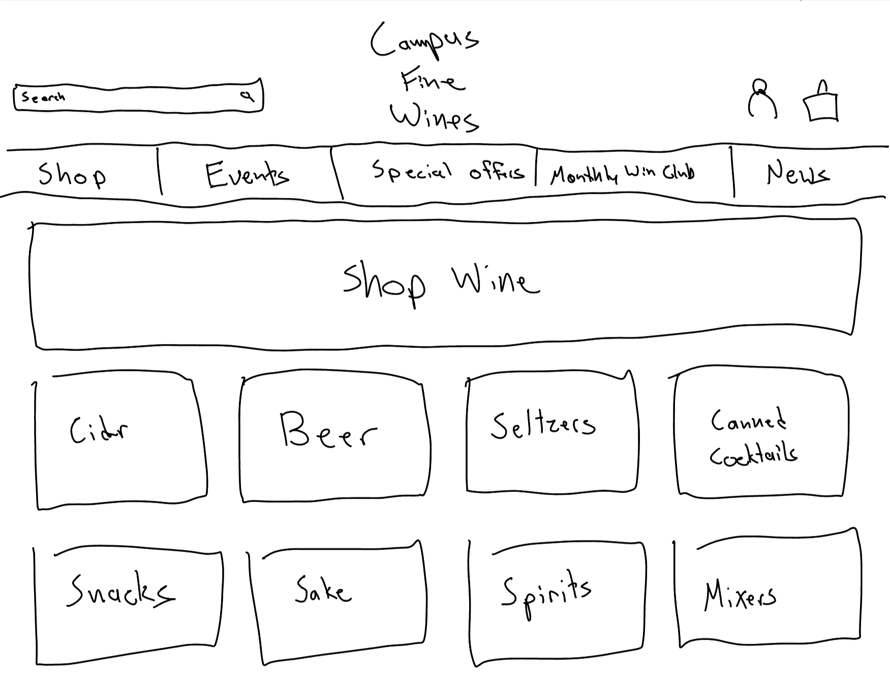
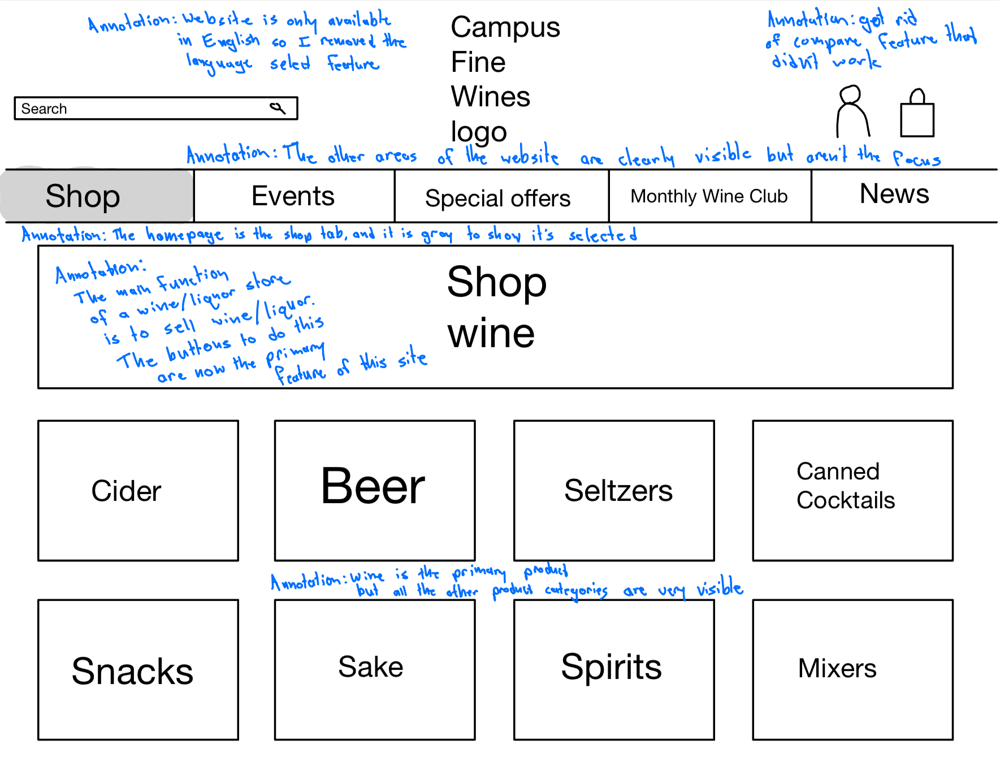
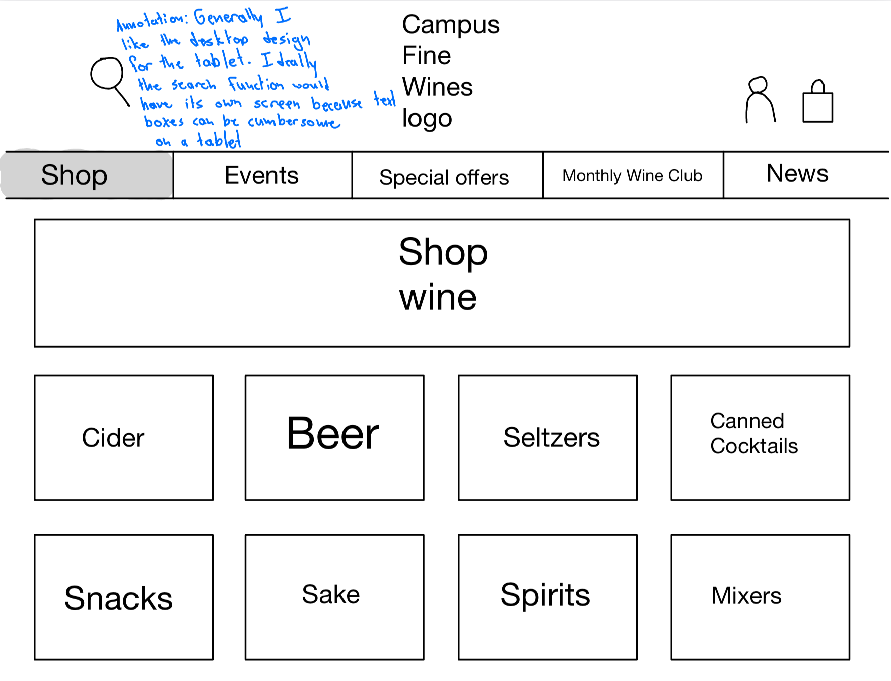
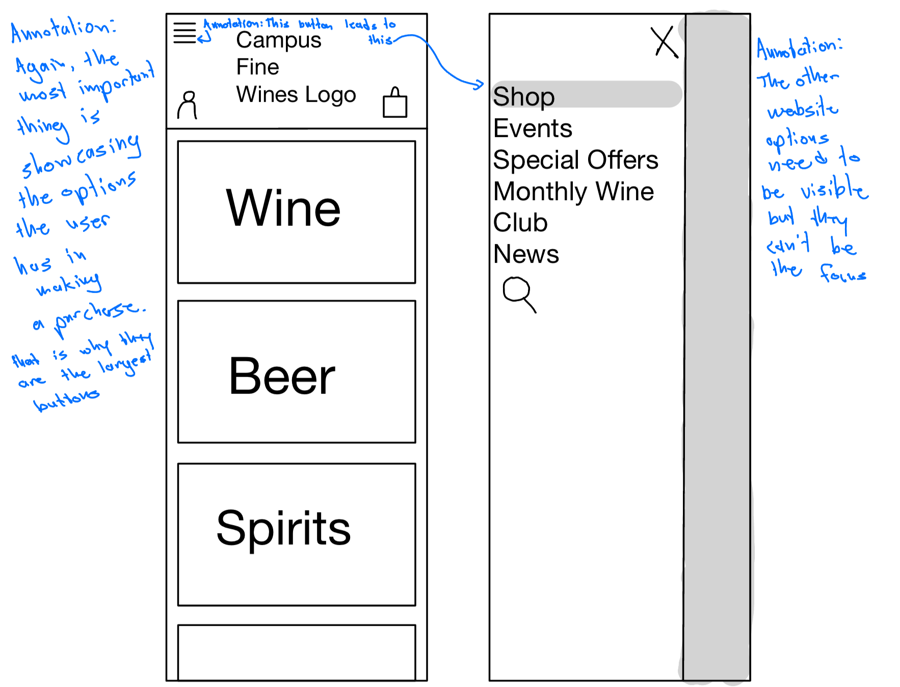
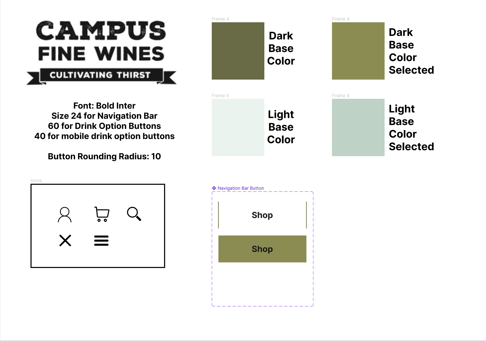
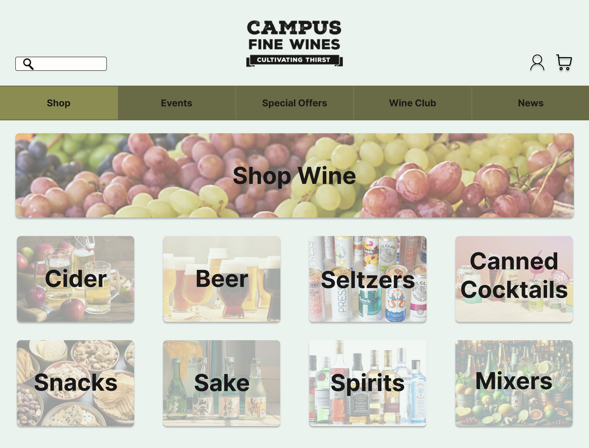
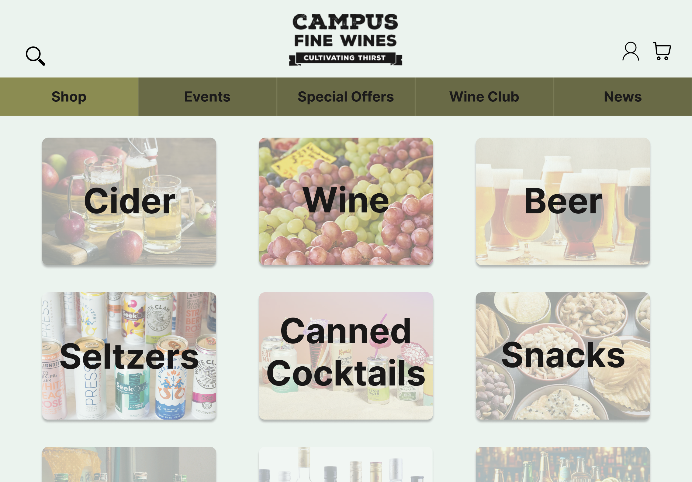
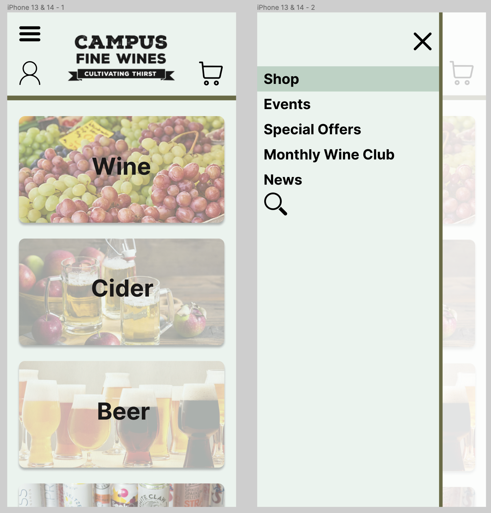

Responsive Redesign
The goal of this assignment is to practice the workflow of redesigning a simple website. You should take away the skills necessary to analyze and identify flaws in an existing interface, create low-fidelity and high-fidelity prototypes for various screen sizes, and build a responsive website based on those prototypes.
Part 1: Identifying Usability Problems
In this portion of the project I identified an axisting Webpage that I thought had areas for improvement. I outline these areas below. Part 1 also consists of analysing the output from the WebAIM WAVE tool that helps identify accessibility issues in a given website.
Chosen Website: Campus Fine Wines
 Original Website
Original Website
Why I chose this Website
I chose this website because at first glance it seems pretty solid, but upon closer inspection, it is quite confusing and messy; there are many categories inherent to this business, and yet they are not placed front and center.
Observations about usability using the criteria we learned about in class
- It is clear how to use the website but it could be clearer
- All primary functions of the website shoved into one drop down menu
- Should feature options prominently
- Moving visuals on the website that do not need to be there
- Some things look clickable but are not
- Strange Tags section at bottom of page
- Compare function is present but very easy to miss and unclear how to use
- Inefficient because all tasks require multiple clicks
- Compare feature does not work
Critique of WebAIM WAVE Analysis
In general the problems found by WAVE had to do mostly with empty links, html structure errors like skipped headers and missing labels. These things are not immediately apparent to the naked eye, but are important. One large issue is the large amount of low contrast text on the page. This is noticeable and is a bit annoying. It is usable for the average eye, but is definitely not accessible.
Part 2: Visual Redesign
In the next portion of the project, my personal redesign of the chosen webpage takes place. Starting with speed sketches to brainstorm and moving through low fidelity wireframes to high fidelity mockups, I produce what I believe is a design that improves upon the original webpage.
Speed Sketches
Final Sketch
Desktop Lo-Fi Wireframe
Tablet Lo-Fi Wireframe
Mobile Lo-Fi Wireframe
Style Guide
Desktop Hi-Fi Mockup
Tablet Hi-Fi Mockup
Mobile Hi-Fi Mockup
Part 3: Responsive Redesign
In the final part of the project I produce a responsive webpage using HTML and CSS in the style of my high fidelity mockups. It can be viewed on any device, and deals with the design issues I identified in part 1. Functional elements of the webpage have been replaced with dummy elements for the purpose of this assignment.
Final Redesigned Website